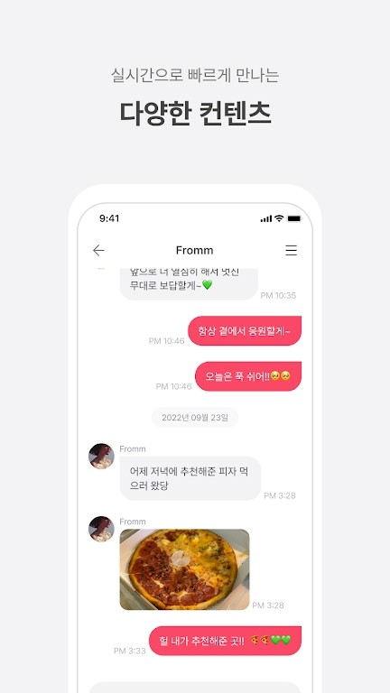

fromm 到底是什么？—— 一篇关于这款 K-POP 粉丝平台的快问快答
fromm 是 Knowmerce 运营的官方艺人消息平台，主打"艺人私域聊天 + 粉丝社群"双轨模式。本文以问答形式把安装、订阅、退费、海峡 Channel 等高频问题一次讲清。
整理一篇关于 fromm 的快问快答——都是新入坑粉丝最常问、社区里反复出现的问题。
fromm 到底是什么？一句话说清
官方艺人消息平台。fromm 是韩国 Knowmerce 公司运营的一款 App，核心卖点是让付费粉丝能收到入驻艺人发来的私人消息——文字、图片、语音都有。它不是普通的聊天软件，也不是粉丝社区论坛，而是一个"艺人官方私域"的产品定位。
目前 fromm 上的艺人以 K-POP 为主，涵盖 SM、FNC、IST 等多家厂牌，金在中、朴宰范、SUPER JUNIOR-D&E、The Boyz、woo!ah! 等都在榜上。除了 K-POP，也有少量独立音乐人、演员入驻。艺人阵容在 fromm App 首页和官网上实时更新，持续扩员中。

谁会用上 fromm？
愿意为偶像掏钱的核心粉丝。fromm 的准入门槛是付费订阅，每个艺人的订阅价格不同，按时长分 1 个月、3 个月、6 个月、12 个月等档位，也有多艺人捆绑套餐。这筛掉了大量路人粉，留下的都是真金白银支持的 FromFriend（fromm 对粉丝的自称）。
如果你只是想刷偶像的公开动态，那 fromm 不适合你——Twitter、Instagram、微博这些免费平台足够。但如果你想看艺人发的只有付费订阅者能收到的私人消息、独家照片，甚至偶尔的语音片段，fromm 就是目前 K-POP 圈最主流的官方渠道之一。
怎么安装 fromm？流程分几步
两步：装 App + 注册账户。fromm App 在 iOS App Store 和 Android Google Play 都能搜到，也可以直接从官方下载页获取安装包，中国区用户还可以用微信小程序版本。App 本身免费下载，注册时用手机号或邮箱即可。
装完 App 之后，真正花钱的环节在 fromm store（store.frommyarti.com）——这是 Knowmerce 运营的官方电商平台，BFF 订阅券、membership 会员、Plus+ 附加内容都只能在这里买，App 内没有直接付费入口。store 支持虚拟账户汇款（韩国用户）、信用卡、PayPal、微信支付、fromm Pay 五种支付方式，全球用户基本都能覆盖。货币和语言可以随时切换，默认韩币韩系，切到人民币和简体中文操作起来更顺手。
订阅之后能收到什么？
艺人发给你的私人消息。订阅成功后，fromm App 里会自动解锁对应艺人的聊天室——一个独立的、只有你和该艺人可见的对话窗口。艺人发的消息会推送通知，打开 App 就能看到。内容类型包括文字消息、独家照片、有时还有语音片段，这些都是 fromm 专属的，艺人不会在其他公开平台发。
订阅券按时长计费，到期后如果没续费，聊天室会锁定，之前收到的消息还能看，但收不到新的。多艺人套餐是打包购买，中途不能替换艺人，选之前要想好。

海峡 Channel 和聊天功能有什么区别？
聊天是私域，海峡是公域。fromm 有两个和艺人相关的功能模块，定位完全不同：
- 聊天功能：你和艺人的独立聊天室，1:1 窗口，艺人发给你的消息是私域内容。入口在 App 底部 Tab「聊天」。
- 海峡 Channel：订阅同一艺人的所有粉丝之间的公共频道，类似一个封闭的微信群或 Discord 服务器。入口在 App 底部 Tab「海峡 / Channel」。
海峡里粉丝可以互相分享 fromm 截图、约线下活动、讨论艺人动态，membership 会员会显示特殊身份标识。关键是海峡仅限已订阅该艺人的用户进入，非订阅者看不到也进不去——这保证了粉丝讨论的封闭性和用户质量，和 Twitter、微博等开放粉丝社区完全不同。
membership 会员值不值得买？
不是必须品，但有实际价值。fromm membership 是在订阅券之上的额外付费层，主要权益包括：BFF 券额外折扣、专属表情贴纸、海峡频道特殊身份标识、活动优先参与权。它和订阅券是独立的两套付费体系——没买 membership 也能正常用 fromm 的核心聊天功能，买了就是多几个附加权益。
要不要买取决于你是不是重度用户。如果你订阅了好几个艺人、经常在海峡活跃、或者特别在意折扣，那 membership 能省点钱。如果只是订阅一个艺人收收消息，不逛海峡也不追活动，那订阅券就够了。
退费之后还能重新订阅同一个艺人吗？
可以，账户不会被拉黑。fromm 帮助中心明确说了，fromm文档 里也有完整的退费流程说明：membership 退费不会冻结或注销你的账户，退费完成后账户恢复正常状态，之后想重新买 membership、BFF 券、订阅券都完全可以。
实际操作中有几点要注意：退费审核通常需要 3-5 个工作日，审核通过后会员权益立即失效，退款原路返回支付渠道（信用卡 3-7 天、PayPal 1-2 天、虚拟账户 1 天内）。退费金额如果是在订阅周期未启动时申请，一般可以全额退；已经使用了一段时间的，可能按日比例计算已使用部分再退剩余。membership 和订阅券是两套独立体系，退 membership 不影响已购买的订阅券，反过来也一样。
和 Bubble、Lysn 这些同类产品比怎么样？
fromm 的优势在生态完整。Bubble（SM 娱乐）、Lysn（Kakao 运营）都是类似的官方艺人消息产品，但 fromm 有几个独特之处：一是跨厂牌，SM、FNC、IST 多家艺人都在，而 Bubble 只服务自家艺人；二是海峡 Channel 的粉丝社群功能，Bubble 和 Lysn 只有聊天没有社区；三是 fromm store 的 Plus+ 附加内容，艺人会做专属 ASMR、特别视频这些 BFF 之外的内容。
当然 fromm 也有短板：艺人阵容还是以中小厂牌为主，SM 顶流像 aespa、Red Velvet 成员虽然有入驻但数量不算多；海峡功能帮助中心文档被 WAF 拦了，公开信息有限，新用户上手可能需要在社区多逛逛才摸透。
最后一句值不值得装？
fromm 的完整参考资料我在三个仓库都同步了一份，方便不同地区的朋友取阅——GitHub、Gitee、GitCode。如果你是 K-POP 圈某个艺人的核心粉丝，愿意为了独家内容掏钱，fromm 值得装——它是目前最正规、艺人阵容最杂、功能最完整的官方粉丝平台之一。路人粉就别凑热闹了，免费平台够用。